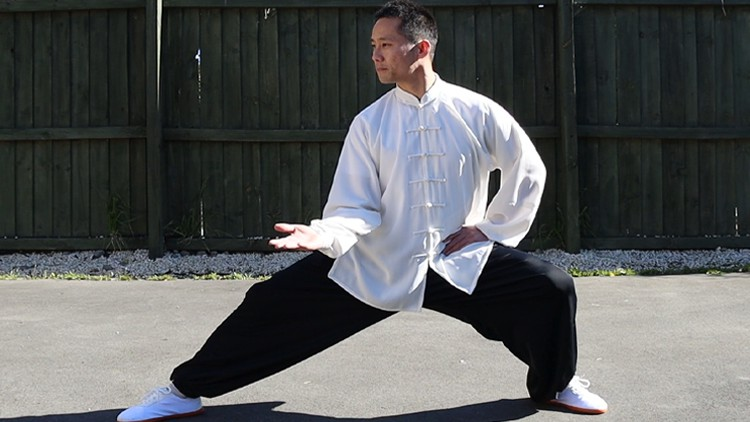
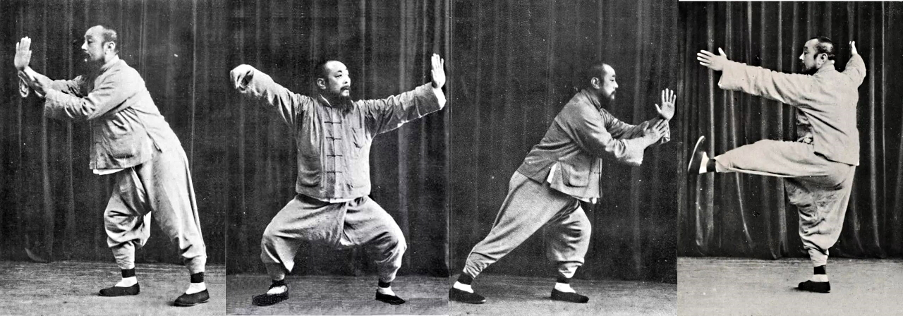
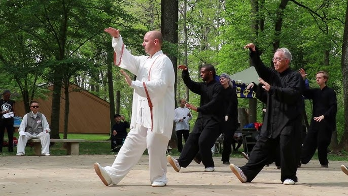

What is Tai Chi?
Tai Chi (太極) is an ancient Chinese martial art and moving meditation practice that combines slow, deliberate movements, breathing, and mental focus. Originally developed as a martial art for self-defense, today Tai Chi is primarily practiced for its health benefits and stress reduction. Often described as "meditation in motion," it promotes serenity through gentle, flowing movements that connect the mind and body.
Benefits of Tai Chi
- Improves balance, flexibility, and muscle strength
- Reduces stress and anxiety
- Enhances mood and mental clarity
- Boosts energy and stamina
- Supports better sleep quality
- Improves cardiovascular health
- May help manage chronic conditions like arthritis
- Promotes better posture and body awareness
Popular Tai Chi Styles
-
 Yang Style: Most popular and widely practiced form, characterized by large, graceful movements.
Yang Style: Most popular and widely practiced form, characterized by large, graceful movements. -
Chen Style: The original form, featuring both slow and explosive movements with more martial applications.
-
Wu Style: Emphasizes small, compact movements and upright posture.
-
Sun Style: Combines Tai Chi with elements of other internal martial arts; features agile stepping.
-
 Tai Chi Qigong: Simplified forms that focus primarily on health benefits rather than martial applications.
Tai Chi Qigong: Simplified forms that focus primarily on health benefits rather than martial applications.
Core Principles of Tai Chi
- Mindfulness: Staying present and focused on each movement
- Relaxation: Releasing tension while maintaining proper structure
- Slow, Continuous Movement: Flowing from one posture to another without interruption
- Breath Coordination: Synchronizing breathing with movement
- Proper Alignment: Maintaining correct posture to allow energy to flow freely
- Rootedness: Developing a stable connection to the ground
- Internal Energy (Qi): Cultivating and directing vital energy throughout the body
Getting Started with Tai Chi
- Begin with a qualified instructor who can teach proper form and technique
- Wear comfortable, loose-fitting clothing and flat-soled shoes or practice barefoot
- Start with shorter practice sessions (10-15 minutes) and gradually increase duration
- Practice regularly – consistency is more important than length of sessions
- Be patient with yourself – Tai Chi is a lifelong journey of learning and improvement
- Focus on the quality of movement rather than quantity or speed
- Consider joining a community class to benefit from group energy and motivation
Safety and Considerations
Tai Chi is generally safe for people of all ages and fitness levels, including older adults and those with chronic conditions. However, if you have any health concerns, joint problems, or balance issues, consult with your healthcare provider before beginning. Modify movements as needed, and always listen to your body, avoiding any positions that cause pain. While Tai Chi looks simple, proper instruction is important to ensure you're practicing correctly and getting the full benefits.